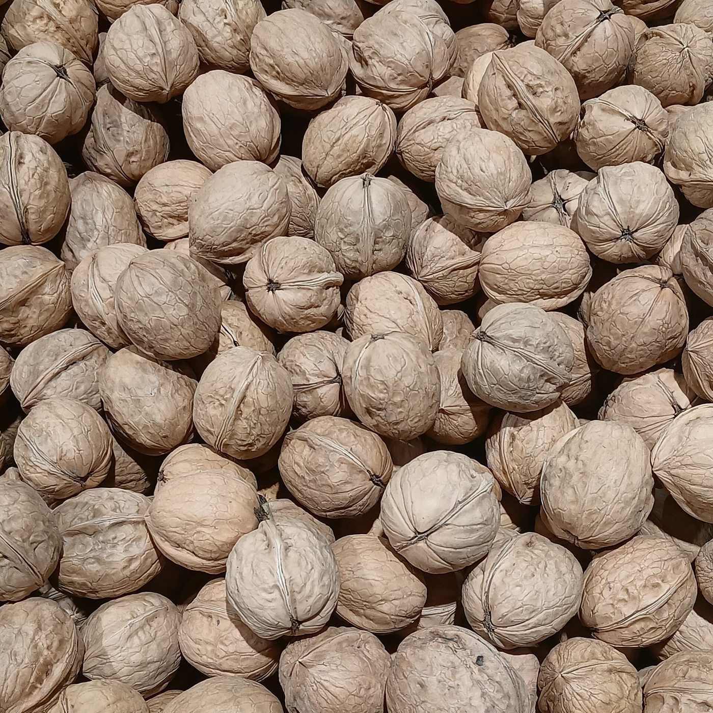

店のこと
お店について
詳しいご紹介文は、お店からお話をうかがってから作ります。ここでは、確認できた情報だけを載せています。
確認できていること
お店の名前と場所
屋号は「国産小麦と無添加生地 むぎのぱん」、所在地は〒260-0041 千葉県千葉市中央区東千葉1丁目1-15です。そのほかの内容は準備中です。Instagramは @muginopan.0901 です。
制作側の連想
各部位のかんたんな説明
このサイトのテーマ「手持ち花火の部位の配置図」は、制作側の連想で、お店の理念・由来とは無関係です。実際の花火の仕様や取り扱いを示すものでもありません。
- 1持ち手束の外側に出ている、紙でできた細い柄の部分。
- 2巻き紙の胴色紙をくるりと巻いた、いちばん太い部分。
- 3色帯胴に巻かれた、色違いの細い帯。
- 4先端のひねり紙の先をねじってすぼめた、尖った部分。
- 5火花先端から四方へ散る、線と点の光。図の中では細い線で描いています。
- 6束ねるひも持ち手の根もとをまとめておく、細いひも。
ギャラリー(イメージ)
麦畑と木の実・はちみつの写真





国外または撮影地不明のフリー素材のイメージです。お店のものではなく、お店の食材や商品を示すものではありません。